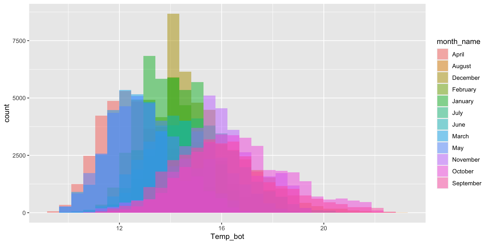
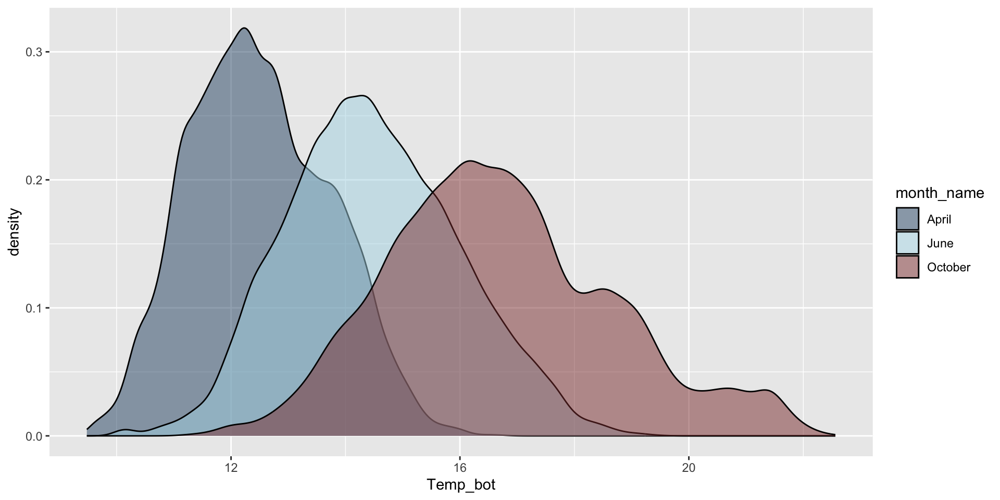
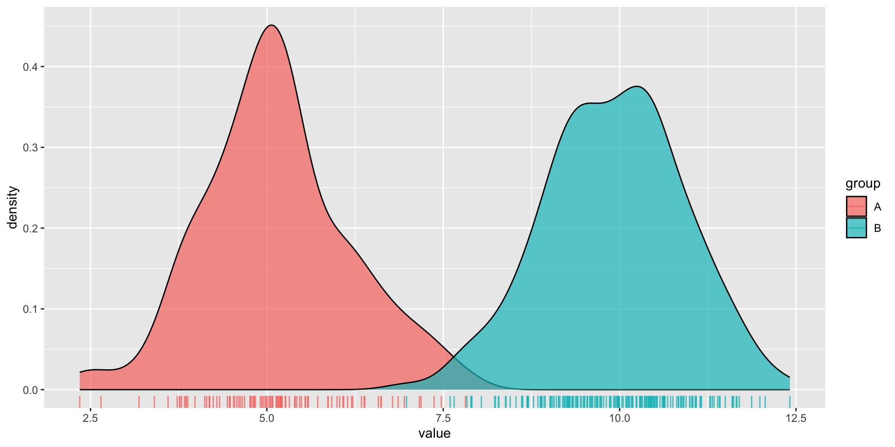
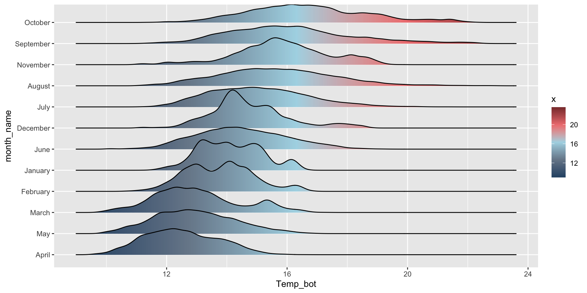
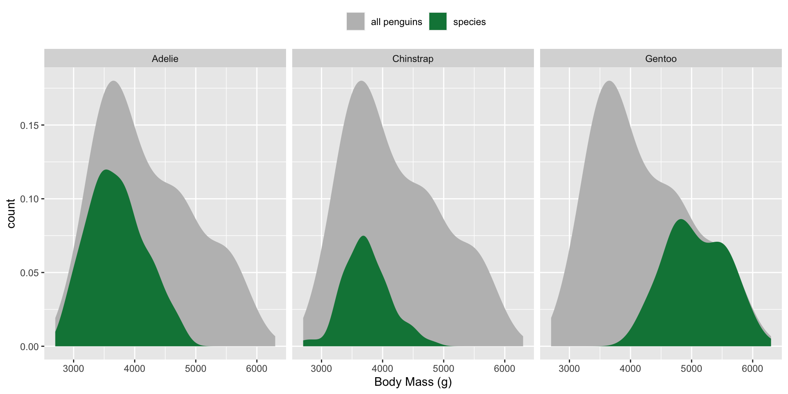
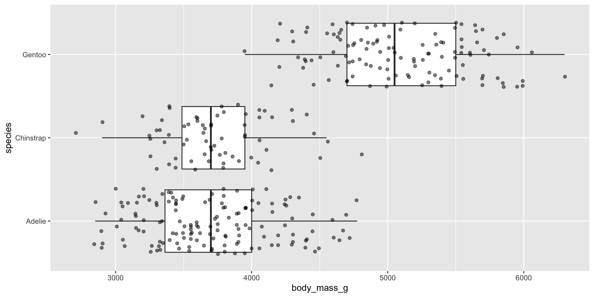
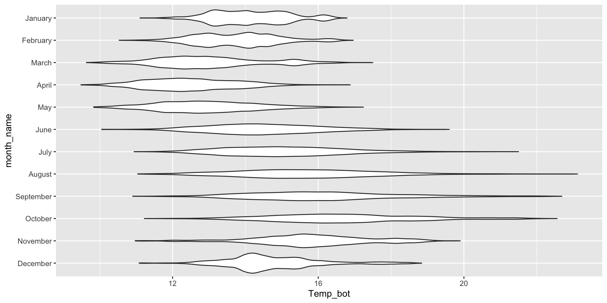
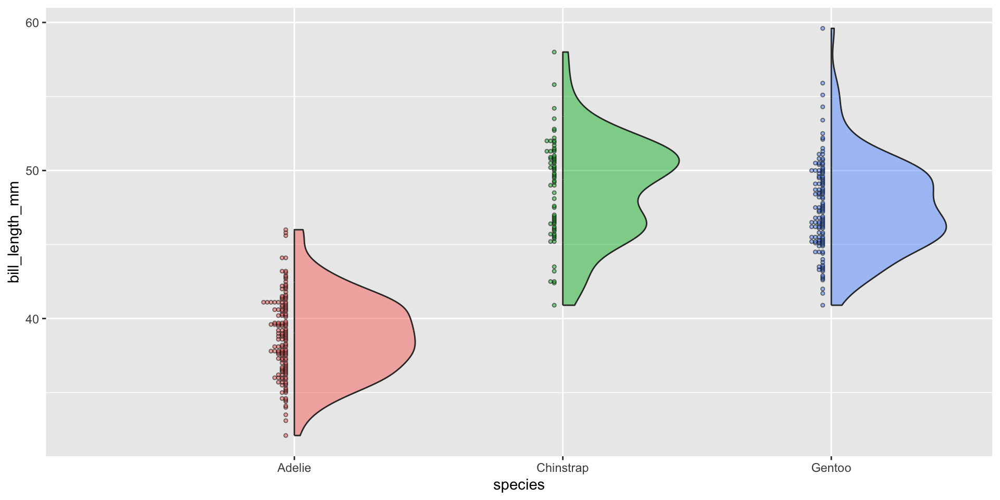
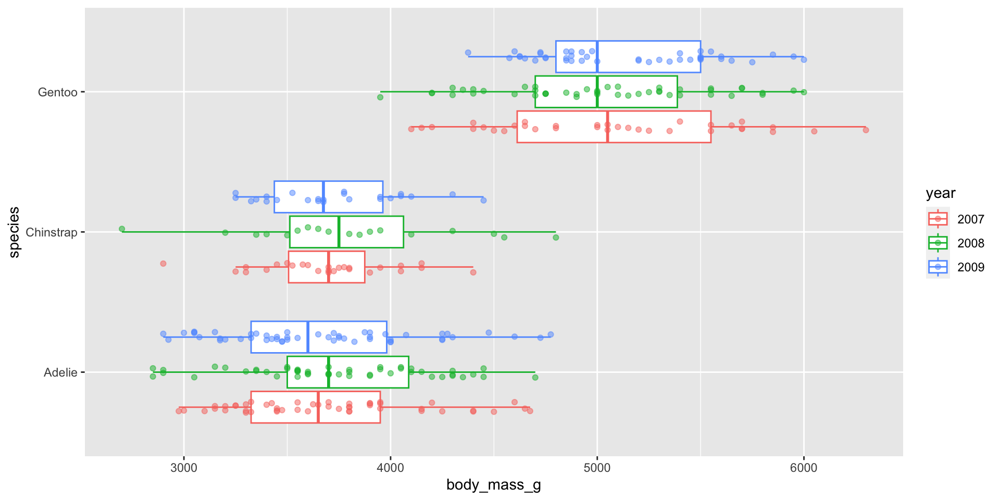

Examples show the distribution of penguin body masses (g) for Adelie, Chinstrap & Gentoo penguins.
The data: bottom temperatures at Mohawk Reef
The Santa Barbara Coastal Long Term Ecolgical Research (SBC LTER) site was established in 2000 to understand the ecology of coastal kelp forest ecosystems. A number of coastal rocky reef sites are outfitted with instrumentation that collect long-term monitoring data.
We’ll be exploring bottom temperatures recorded at Mohawk Reef, a near-shore rocky reef and one of the Santa Barbara Coastal (SBC) LTER research sites.
Histograms are used to represent the distribution of a numeric variable(s), which is cut into several bins. The number of observations per bin is represented by the height of the bar.
Need:
a numeric variable with lots of values
meaningful differences between values
Important considerations:
bin width (30 bins by default)
too few / too many bins

Histograms - avoid plotting too many groups
Twelve groups (month_name) is too many groups – especially when the range of temperature values for each of our groups largely overlap:
Modify binwidth (30 bins by default) – does a bin width of 1 (degree Celsius) actually make sense? Consider scale of interest. Also be mindful when using bins – too few bins will result in loss of distribution shape.
A smoothed version of a histogram. Density plots are representations of the distribution of a numeric variable(s), which uses a kernel density estimate (KDE) to show the probability density function of the variable. The area under each curve is equal to 1.
Need:
a numeric variable with lots of values
Important considerations:
useful when you want to visualize the shape of your data (not affected by bin number)
can be misleading with small data sets
band width, which affects level of smoothing

Density plots - avoid plotting too many groups
Similar to the histogram, twelve groups (month_name) is too many groups! Consider small multiples (using facet_wrap()) if you want to keep all groups.
Modify bandwidth by declaring a multiplier of the default bandwidth adjustment. Reducing the adjust argument reduces the amount of smoothing (default adjust = 1):
Histograms show us the counts (frequency) of values in each range (bin), represented by the height of the bars.
Density plots show the proportion of values in each range (area under the curve equal 1).
We’ll use some dummy data to demonstrate how this differs visually:
dummy_data <-data.frame(value =c(rnorm(n =100, mean =5),rnorm(n =200, mean =10)),group =rep(c("A", "B"),times =c(100, 200)))
Here we two groups (A, B) of values which are normally distributed, but with different means. Group A also has a smaller sample size (100) than group B (200).
An important distinction
It’s easy to see that group B has a larger sample size than group A when looking at our histogram. Additionally, we can get a good sense of our data distribution. But what happens when you reduce the bin number (e.g. set bin = 4)?
We lose information about sample size / frequency in our density plot (note that both curves are the same height, despite group B having 2x as many observations). However, they’re great for visualizing the shape of our distributions since they aren’t affected by the number of bins.
ggplot(dummy_data, aes(x = value, fill = group)) +geom_density(alpha =0.7)

Combining geoms - histogram & density plot
Overlaying a histogram and density plot requires scaling down the histogram to match the density curve scale. Adding y = ..density.. within the aes() function rescales the histogram counts so that bar areas integrate to 1:
ggplot(mko_clean, aes(x = Temp_bot, y = ..density..)) +# scale down hist to match density curvegeom_histogram(fill ="gray", color ="black", alpha =0.75) +geom_density(size =1) # increase line thickness
Ridgeline plots - {ggridges}
What are they?
Ridgeline plots show the distribution of a numeric variable for multiple groups.
Need:
a numeric variable with lots of values
medium to high group numbers
Important considerations:
work best when you have > 6 groups
works well when there is a clear pattern in the result (e.g. if there is an obvious ranking in groups) and/or when visualizing changes in distributions over time or space

Ridgeline plots - good for multiple groups
The {ggridges} package has a number of different geoms for creating ridgeline plots that work well for datasets with larger group numbers (e.g. month_name). Two great geoms to explore (to start):
geom_density_ridges() to create a basic ridgeline plot:
ggplot(mko_clean, aes(x = Temp_bot, y = month_name)) + ggridges::geom_density_ridges()

geom_density_ridges_gradient() to fill with a color gradient:
ggplot(mko_clean, aes(x = Temp_bot, y = month_name, fill =after_stat(x))) + ggridges::geom_density_ridges_gradient() +scale_fill_gradientn(colors =c("#2C5374","#778798", "#ADD8E6", "#EF8080", "#8B3A3A"))
Visualize the raw data underlying the density ridges (since our temperature data is too large (>473,000 rows), so we’ll use the palmerpenguins::penguins data set to demo):
Box plots summarize the distribution of a numeric variable for one or serveral groups, providing the median (line that divides the box), the upper (Q3) and lower (Q1) quartiles (ends of the box), the highest and lowest values, excluding outliers (the whiskers), and potential outliers (dots extending beyond the end of the whiskers).
Need:
a numeric variable, often with multiple groups
Important considerations:
box plots summarize data, meaning we can’t see the underlying distribution (no way to know sample size)
add jittered points on top, or if large sample size, consider a violin plot

Box plots - good for multiple groups
Box plots are great for a few to multiple groups (too many boxes just results in a lot of information to synthesize, as a viewer). If your x-axis text is long, consider flipping your axes to make them less crunched:
Highlight a group of interest – one easy way to do so is by using the {gghighlight} package. Here, we specify a specific month ("October") to highlight:
mko_clean |>ggplot(aes(x = month_name, y = Temp_bot, fill = month_name)) +geom_boxplot() +scale_x_discrete(limits =rev(month.name)) + gghighlight::gghighlight(month_name =="October") +coord_flip() +theme(legend.position ="none")

Since box plots hide sample size, consider overlaying raw data points using geom_jitter() (since our temperature data is too large (>473,000 rows), we’ll use the palmerpenguins::penguins data set to demo):
NOTE: Be sure to remove outliers, since plotting raw data will result in those data points being a second time:
You may have data where you want to include an additional grouping variable – for example, let’s say we want to plot penguin body masses by species and year. We’ll need to at least dodge our overlaid points so that they sit on top of the correct box. Preferably, we both jitteranddodge our points:
penguins |>mutate(year =as.factor(year)) |>ggplot(aes(x = species, y = body_mass_g, color = year)) +geom_boxplot(outlier.shape =NA) +geom_point(alpha =0.5, position =position_jitterdodge(jitter.width =0.2)) +coord_flip()
Similar to overlaying the raw jittered data points, we can combine our box plot with a beeswarm plot using {ggbeeswarm}. Beeswarm plots visualize the density of data at each point, as well as arrange points that would normally overlap so that they fall next to one another instead. Consider using a standalone beeswarm plot here as well! We’ll again use the palmerpenguins::penguins data set to demo:
Violin plots visualize the distribution of a numeric variable for one or several groups, where the shape of the violin represents the density estimate of the variable (i.e. the more data points in a specific range, the larger the violin is for that range). They provide more information about the underlying distribution than a box plot.
Need:
a numeric variable, often with multiple groups
Important considerations:
ordering groups by median value can make it easier to understand
show sample size when comparing groups with very different distributions (e.g. half violin plot)

Violin plots - good for multiple groups with lots of data
Violin plots are great for a few to multiple groups, and are often a better choice than box plots when you have a very large data set (and overlaying jittered points looks busy or downright unreasonable). If your x-axis text is long, consider flipping your axes to make them less crunched:
Overlaying a box plot inside a violin plot can be helpful in providing your audience with summary stats in a compact form:
ggplot(mko_clean, aes(x = month_name, y = Temp_bot)) +geom_violin() +geom_boxplot(width =0.1, color ="gray", alpha =0.5, outlier.color ="red") +scale_x_discrete(limits =rev(month.name)) +coord_flip()

The {see} package provides geom_violindot(), which is useful for simultaneously visualizing distribution and sample size. Because it can quickly get overcrowded with large sample sizes (like Temp_bot), we’ll use palmerpenguins::penguins to demo here:
ggplot(penguins, aes(x = species, y = bill_length_mm, fill = species)) + see::geom_violindot(size_dots =5, alpha =0.5) +theme(legend.position ="none")